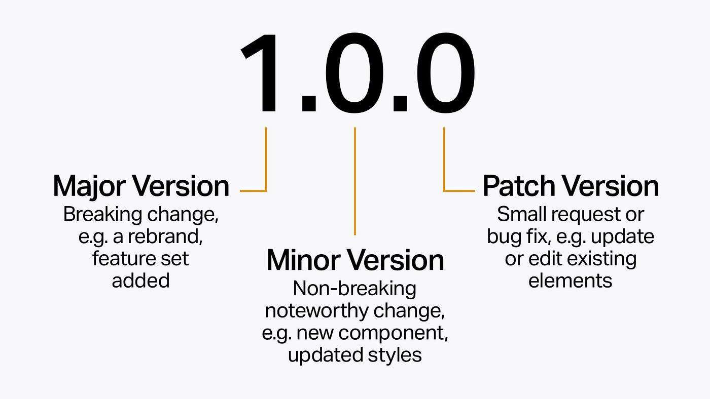
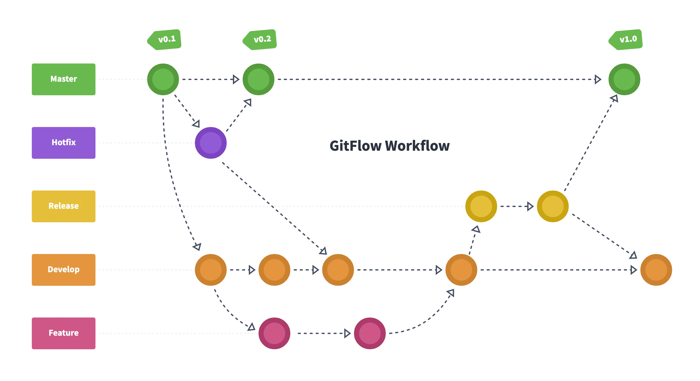

Git
Git es un software de código abierto para realizar un control de versiones distribuido de cualquier proyecto
de desarrollo y programación.
Git permite trabajar a distintos miembros de un equipo en el mismo proyecto, cada uno con una copia del proyecto
independiente para ir efectuando contribuciones al proyecto original. Por este motivo se considera distributibo.
Por otro lado, permite trabajar en multiples brancas para ir construyendo el proyecto por distintos lados e ir
guardando la progresión con su sistema de control de versiones con la que se guardan copias del proyecto para poder
ir versionando y volver a una copia antigua en caso necesario.
Git tiene una página oficial y un libro con toda la documentación.
Para poder utilizar git previamente se debe instalar en nuestra máquina. Se puede descargar directamente desde su página web.
Git se puede utilizar directamente en una terminal (incluyendo la terminal Git Bash especializada en git) o en un
entorno gráfico que permite trabajar git de una manera más visual. Hay varias opciones de entorno gráfico aquí.
Como en cualquier otro programa que se ejecuta en la terminal tenemos git --version para saber la
version instalada y git --help para obtener las palabras claves que se utilizan en la terminal.
Muy recomendable revisar este cheatsheet con los comandos principales de git
Comandos básicos
Dejando a parte Git, algunos de los comandos básicos para cualquier terminal son los siguientes:
ls- Lista todas las ubicaciones a las que tiene acceso en la ruta en la que se encuentre.
cd UBICACIÓN- Acceder a una nueva ruta. Ej cd desktop/curso-git/capitulo_1.
Con cd .. se vuelve a la ruta anterior.
pwd- Indica la ruta donde se encuentra.
mkdir "CARPETA"- crea una nueva carpeta en la ruta con el nombre indicado.
Inicio
Para empezar a utilizar git es necesario configurarlo con un correo y ejecutarlo
git config- Comando para establecer la configuración (usuario).
-
--global
Establece la configuración para toda la máquina.
-
user.name "NOMBRE"
Crea el nombre de usuario, es obligatorio para empezar a utilizar git.
-
user.email "EMAIL"
Crea el email de usuario, es obligatorio para empezar a utilizar git.
-
init.defaultBranch NOMBRE
Se puede elegir el nombre para la primera branca del proyecto. Por defecto se crea con nombre master.
-
alias.NOMBRE "CONFIGS"
Permite crear una abreviatura para ejecutar un comando que pueda tener varias opciones, con el fin de
ejecutar un mismo comando mucho más rápido.
Ej. git config --global alias.tree "log --graph --decorate --all --oneline" guardará toda esta
configuración para ver los logs con el alias tree.
git ALIAS- Ejecuta el alias que hayamos guardado previamente en git config
git init- Comando para empezar a utilizar git en la ruta donde se ejecuta. Este comando crea una carpeta oculta
.git donde se almacena
Si hay algunos archivos que no queremos que nunca se guarden ni se tengan en cuenta para los commits ni versiones de
git debemos ingluirlos en un archivo llamado .gitignore
Todos los archivos que se incluyan en este archivo no seran guardados en ningún momento por git ni github.
Muy útil para ignorar archivos sensibles, las carpetas /node-modules, /dist, /tmp y de más
archivos temporales o de la propia máquina.
Al crear este archivo debe ser añadido a git en un commit para que tenga en cuenta los archivos que debe ignorar.
git add .gitignore
git commit -m "gitignore file added"
Al crear un proyecto de Angular, el archivo .gitignore se crea por defecto con todas estas carpetas.
Comandos Básicos
Con los siguientes comandos podremos ir capturando el proyecto a medida que avanzamos y vamos modificandolo y
ampliandolo.
git status- Nos da información de como esta el proyecto en git (brancas, commits y estado de archivos).
git add ARCHIVOS- Permite elegir que archivos se van a tener en cuenta para ir guardando el progreso. Podemos añadir todos los
archivos escribiendo un punto "." en lugar del nombre de los archivos. Los archivos pasan a estar en estado
stage.
git commit- Guarda los archivos añadidos en la branca donde nos encontremos. Crea una captura de como se encuentran los
archivos en ese preciso momento.
Tras ejecutar este comando se informa de los cambios realizados en la branca y del HASH
del commit (este hash es un identificador único del commit que puede resultar
útil para otros comandos a los que tengamos que hacer referencia a dicho commit).
HEAD se denomina al último commit sobre el que estamos trabajando.
-
-m "MENSAJE"
Obligatorio añadir un mensaje/comentario que describa lo que hemos guardado o el progreso aplicado.
git log- Imprime el historial de commits y el usuario que lo ha realizado.
-
--graph
Muestra el historial con un gráfico de las ramificaciones.
-
--pretty=FORMATO
Muestra el historial con un formato diferente, puede ser: oneline, short, full, fuller y format.
-
--stat
Muestra más datos de cada commit (archivos modificados, lineas modificadas o eliminadas).
-
--shortstat
Muestra un resumen de las modificaciones de cada commit.
-
--name-only
Muestra la lista de los archivos afectados en cada commit.
-
-NÚMERO
Muestra los últimos commits guardados que indiquemos.
-
--since=TIEMPO
Muestra historial desde el tiempo indicado (se debe indicar en ingles) o fecha. Ej. git log
--since=2024-01-16 o por tiempo git log --since=2.weeks.1.day.
-
--after=FECHA
Muestra historial despues de la fecha indicada (formato ingles). Ej. git log --after=2023-01.
-
--until=FECHA
Muestra historial hasta la fecha indicada (formato ingles). Ej. git log --until=2024-01.
-
--before=FECHA
Muestra historial de antes de la fecha indicada (formato ingles). Ej. git log --before=2023-01.
-
--author=USERNAME
Muestra historial de commits de un determinado usuario.
git checkout ARCHIVO / COMMIT_HASH / tags/ETIQUETA / RAMA- En caso de que el arhivo este en estado Modified, se deshacen los cambios y vuelve a
estar como en su último commit.
Si ponemos el Hash del Commit que obtenemos con git log volveremos al punto de se mismo commit,
deshaciendo todas los modificaciones e incluso eliminando archivos en caso de haber creado alguno nuevo.
En caso de poner tags/ETIQUETA mueve el Head a la etiqueta indicada.
Si indicamos la RAMA cambiamos a la rama especificada y ponemos el Head en su último commit.
git diff- Se imprime en pantalla los cambios de todos los archivos con estado Modified
git reset- Deshace los últimos commits para mover el HEAD. Es obligatorio añadir parametros para ejecutarlo
-
HEAD ARCHIVO
Permite modificar un archivo Modified a su estado del commit Head.
-
--hard COMMIT_HASH
Descarta los commits posteriores a COMMIT_HASH y permite mover el Head al commit indicado.
-
--soft COMMIT_HASH
Mueve el Head al commit indicado sin descartar los commits posteriores.
-
--merge COMMIT_HASH
Mueve el Head al commit indicado haciendo merge de los cambios con el Head anterior.
git reflog- Historial completo de commits, incluyendo incluso los que hemos deshecho con git reset o git checkout.
Podemos volver al commit que queramos con git reset --hard COMMIT_HASH (incluso a commits deshechos).
git tag - Permite añadir etiquetas tipo versionado después de un commit importante. Muy útil para ir marcando el progreso
con versiones e ir diferenciando el progreso con los cambios más relevantes. Muy habitual ir haciendo tags con
la nomenclatura v0.0.0.
Si no añadimos nada más este comando nos muestra el historial de tags
-
ETIQUETA
Añade el tag o versión con el texto ETIQUETA.
-
-a ETIQUETA
Añade el tag de manera anotada, incluyendo username, correo, fecha, mensaje, etc.
-
-m "MENSAJE"
Permite añadir un comentario al tag.
-
--merge COMMIT_HASH
Mueve el Head al commit indicado haciendo merge de los cambios con el Head anterior.
En desarrollo de software hay un modo de ir versionando el progreso que va marcando el avance teniendo en cuenta
3 números vX.X.X:

git show ETIQUETA- Permite ver la información de la etiqueta anotada.
Estados archivos
Los archivos pueden fluctuar por distintos estados dependiendo de los comandos ejecutados y de las modificaciones que
hagamos en ellos y con los commits:
-
UNTRACKET
➡ El archivo aún no ha sido añadido a git, por lo que no se tiene en cuenta para ningún comando.
-
STAGE
➡ El archivo ha sido añadido para guardarse en un commit por primera vez.
-
????????
➡ DESCIPTION.
-
MODIFIED
➡ El archivo que ya habia sido commiteado se ha modificado y aún no se ha ejecutado ningún commit para guardar
los cambios.
Ramas
Una de las principales características de git es que permite trabajar en diferentes Ramas paralelas, lo que permite
organizar el trabajo de una manera más eficiente sobretodo si hay varias personas implicadas.
Hay varias técnicas para organizar las Ramas pero principalmente se distingue la branca master donde se guardas
versiones finales, branca de trabajo donde se van juntando los avances, Ramas de funcionalidades donde cada
persona añade su parte individual y Ramas de arreglos utilizadas para corregir fallos.

git branch- Comando que permite ir creando nuevas ramas en nuestro proyecto.
Si no añadimos nada más, este comando muestra todas las brancas que hay y marca en la que estamos trabajando
actualmente.
-
NOMBRE
Crea una nueva rama con el nombre indicado. La rama se crea a partir del commit del Head donde nos
encontremos.
-
NOMBRE --delete (-d)
Borra la rama indicada. Podemos añadir --force para forzar la eliminación.
-
NOMBRE --move (-m)
Cambia el nombre de la rama en la que estamos.
git switch RAMA- Permite moverse a la rama indicada.
Es habitual cambiar de rama también con git checkout RAMA, este comando hace descargarse la rama si
estamos trabajando en remoto y mover el Head a su último commit.
Moverse de rama implica que los archivos y las modificaciones pueden desaparecer si la otra rama tiene un commit
más antiguo.
git merge RAMA- Fusiona la rama indicada en la rama en la que estamos, es decir que incluye todos los cambios de RAMA
en la rama
que donde estamos. Esta acción genera un nuevo commit en la branca donde aplicamos el merge.
Ejemplo: para fusionar los cambios que hemos hecho en la rama bug_fix debemos cambiar primero a la rama
master i ejecutar git merge bug_fix.
Al hacer merge la RAMA que hemos incluido en la rama actual sigue existiendo. Si no se va a trabajar
más en esa rama es recomendable eliminarla con git branch -d RAMA para evitar tener
multiples ramas activas
Al hacer merge se pueden generar conflictos cuando hay una modificación en ambas ramas de una misma
linea de código. En este caso git avisa del conflicto para que se elija la modificación definitiva
que se debe permanecer en el merge y el nuevo commit generado.
git stash- Permite dejar los archivos con estado Modified guardados sin necesidad de hacer
commit.
Muy útil cuando queremos cambiar de rama sin haber finalizado el código, hacemos git stash, se queda
guardado el progreso y entonces git nos deja cambiar de rama guardando las modificaciones.
-
list
Informa de los stash que hay guardados.
-
pop
Recupera los cambios guardados en el stash.
-
drop
Elimina el stash guardado y permite volver a como estaban los archivos en el último commit.
git diff RAMA- Muestra las diferencias entre la rama actual y la rama indicada en el comando.
GITHUB
Github es una plataforma online que permite utilizar git. El proyecto queda
guardado remotamente y permite compartirlo con otras personas para poder trabajar en el mismo proyecto remotamente.
Github permite ver perfiles y repositorios de otros usuarios, por lo que es una buena herramienta para mostrar el
trabajo realizado y los proyectos tanto personales como en los que se ha participado. Es recomendable organizar y
ofrecer información para todos los visitantes que puedan acabar en nuestro perfil.
Muy importante crear la página principal donde podemos mostrar la información que queramos que la
gente vea nada más entrar en nuestro perfil. Para ello se debe crear un nuevo repositorio con el mismo nombre que
tenemos de usuario y con un readme.
Tanto en la página principal como en cualquier otro documento readme o escrito de Github se utiliza el markdown para enriquezer el texto. También se acepta código HTML.
Se puede sincronizar un proyecto de git con Github, es decir de local a remoto o al revés, de Github
a git. Para empezar a sincronizar proyectos en Github primero de todo debemos autenticarnos, lo más recomendable es
hacerlo con SSH, consulta este enlace para más información. Este tipo de autenticación crear una carpeta con
unos archivos utilizados para autenticar, podemos comprobar si ya hemos realizado este paso con el comando
ls -al ~/.ssh en la consola de Git Bash.
Para trabajar con Github desde nuestro equipo local se utilizan varios comandos:
git remote- Connecta el proyecto con el repositorio remoto de github
-
add origin LINK_REPO
Se indica a que repositorio remoto debe conectarse. Ej. git remote add origin
git@github.com:boboxanqui/Apuntes.git
git push- Actualiza todos los últimos commits con el repositorio remoto.
git fetch- Descarga en local el historial de cambios, es decir los datos de los últimos commits sin descargar las
modificaciones. Útil para comprobar si hay algun conflicto.
git pull- Descarga el historial de cambios y las modificaciones.
git clone LINK_REPO- Se descarga un repositorio remoto completo a local.
Flujo colaborativo
Github permite trabajar a varias personas en un único proyecto. Para poder participar en un proyecto es necesario dar
permisos a los contribuyentes.
Para añadir cambios a un proyecto, primero es necesario hacer un fork del proyecto original. Se hace
directamente desde Github, dentro del repositorio del usuario que tiene el proyecto. Esto crea una copia del
repositorio en nuestro usuario, en el cual podremos hacer las modificaciones que queramos aportar haciendo un
clone a nuestro equipo local para poder trabajar.

Para poder añadir los cambios al proyecto original, se hace a través de Pull Request (PR de forma
abreviada). La PR se hace directamente desde Github, en la copia del proyecto que tenemos en nuestra cuenta.
Al hacer una PR podemos comparar las modificaciones con el proyecto original, ver en la parte superior la rama y el proyecto al que queremos hacer los cambios. También es aconsejable añadir un título (explicando el cambio) y podemos dejar comentarios. Una vez enviada la PR debe ser el usuario del proyecto original quien apruebe los cambios, deje un comentario o solicite modificar algo más. Una vez aprobado debe hacer merge a su proyecto.
El flujo completo de trabajo seria:
- Hacemos fork del proyecto.
- Clonamos el proyecto para tenerlo en local y poder trabajar en él.
- Creamos una nueva rama donde añadiremos nuestras modificaciones.
- Hacemos un push a nuestro repositorio remoto para añadir los cambios.
- Solicitamos la pull request al proyecto originial desde nuestra nueva rama a la rama correspondiente del proyecto original.
- Esperamos la aprobación o revisión de nuestros cambios por parte del autor.
Las PR pueden generar conflictos cuando hay un cambio solicitado con una PR en una misma linea que ya ha sido modificada.
Github nos permite solventar los conflictos directamente desde su web, de modo que podemos quedarnos con una de las dos partes, añadir las dos o hacer los cambios requeridos.
Después de completar una PR es recomendable sincronizar el repositorio remoto de nuestro usuario para tener todos los nuevos cambios que se han añadido al proyecto original y poder seguir trabajando con el proyecto actualizado. Lo podemos hacer directamente desde Github con la opción Sync fork.
Título 2
Título 3